The lawn at the bottom of the garden
Weigela

Pruning Weigela
- When to Prune: The best time to prune is immediately after it finishes flowering, typically in early to mid-summer (around June or July). Weigela blooms on the previous year's growth, so pruning right after flowering gives the plant enough time to develop new shoots for next year's blooms.
- How to Prune:
- General Trimming: Cut the stems that have just flowered back by about a third, making the cut just above a healthy leaf node or new shoot.
- Tidying Up: Remove any dead, damaged, or crossing branches to improve the shrub's shape and allow better air circulation.
- Rejuvenation (Every few years): For mature plants, cut out up to one-third of the oldest, thickest, and most woody stems right down to the base to encourage new growth.
Deciduous Azalea (Yellow Azalea / Rhododendron luteum)

Overview
A striking, hardy deciduous shrub famous for its masses of highly fragrant, bright yellow, funnel-shaped flowers. Unlike evergreen azaleas, it drops its leaves in the winter, but it puts on a spectacular autumnal display before doing so.
Key Characteristics
- Blooms: Produces clusters of vibrant yellow, heavily scented flowers in late spring to early summer (typically May to June, settling in perfectly with the West Yorkshire seasons).
- Foliage: Bright green, oblong leaves in the spring and summer that turn brilliant shades of orange, red, and purple in the autumn.
- Growing Conditions: Thrives in acidic, moist, but well-draining soil. It does best in dappled shade or partial sun.
Pruning & Maintenance
- When to Prune: Immediately after flowering (usually late spring to early summer, around late June). Because these azaleas bloom on old wood, pruning too late in the season will accidentally remove next year's flower buds.
- How to Prune: Generally low-maintenance. Focus primarily on removing dead, damaged, or diseased wood.
- Tidying: Thin out crossing stems to improve air circulation through the center of the plant.
- Rejuvenation: If the shrub becomes too dense or overgrown over time, you can cut out a few of the oldest, thickest stems right down to the ground.
Ornamental Cherry Tree (Prunus)

Overview
A classic deciduous garden tree celebrated for its spectacular spring blossom display. Beyond the flowers, it features beautiful foliage that often turns vibrant colors in autumn, and distinctive bark marked with horizontal bands called lenticels.
Key Characteristics
- Foliage: Simple, alternately arranged green leaves with prominently serrated (toothed) edges.
- Bark: Highly characteristic smooth bark featuring prominent horizontal lines or breathing pores (lenticels), which are clearly visible on the trunk.
- Blooms: Produces prolific clusters of white or pink flowers in early to mid-spring.
Pruning & Maintenance
- When to Prune: Pruning must strictly be done in mid-summer (July to August). Pruning cherry trees during the wet winter or early spring exposes the fresh cuts to airborne fungal infections like silver leaf disease and bacterial canker.
- How to Prune: Cherry trees generally resent heavy pruning. Keep it to an absolute minimum, focusing only on removing dead, diseased, or damaged branches.
- Shaping: If necessary, lightly thin out any crossing or rubbing branches to maintain a balanced, open canopy that allows good air circulation.
Hebe (Shrubby Veronica)

Overview
A highly popular, versatile evergreen shrub that provides excellent year-round structural interest in the garden. This particular one appears to be a narrow-leaved variety, known for forming a dense, rounded dome of attractive foliage.
Key Characteristics
- Foliage: Narrow, lance-shaped green leaves that are arranged in neat, opposite pairs along the stems (a classic identifier for Hebes).
- Blooms: Depending on the exact variety, it will likely produce slender spikes (racemes) of small white, pink, or purple flowers later in the summer.
- Growth Habit: Forms a naturally tidy, bushy, and rounded evergreen mound.
Pruning & Maintenance
- When to Prune: Late winter to early spring (around April) just before the new growing season starts. You can also deadhead the plant lightly right after it finishes flowering in late summer to autumn.
- How to Prune: Hebes generally need very little pruning. You can give it a light trim over the top to maintain its neat, rounded shape and encourage bushy growth.
- Caution: Avoid cutting back hard into the old, brown, leafless wood (visible deep in the center of the shrub), as Hebes often struggle to regrow from old wood. Stick to trimming the softer, leafy green growth.
Plum Tree (Prunus domestica)

Overview
A deciduous fruit tree commonly found in UK gardens, offering spring blossom and, depending on the variety, a harvest of edible fruit in late summer or autumn. The mottled, somewhat textured bark is a typical feature as these trees mature.
Key Characteristics
- Foliage: Simple, bright green leaves arranged alternately along the stems, featuring finely serrated (toothed) edges and a pointed tip.
- Bark: The bark often appears mottled with patches of green, grey, and brown, featuring small breathing pores known as lenticels.
- Blooms: Produces clusters of white flowers in early spring, before or just as the leaves begin to emerge.
Pruning & Maintenance
- When to Prune: Like the ornamental cherry, plum trees belong to the Prunus family and must be pruned in mid-summer (around July or August). Avoid winter pruning to prevent airborne fungal infections like silver leaf disease.
- How to Prune: Remove any dead, diseased, or crossing branches to maintain an open center (often styled as a 'goblet' shape). This open structure allows light and air to circulate, which is vital for developing healthy fruit.
- Harvesting: Depending on the specific cultivar and the local Yorkshire summer weather, plums are typically ready to harvest between August and September.
Orange Ball Tree (Buddleja globosa)

Overview
A striking, semi-evergreen to deciduous shrub that stands out from the standard butterfly bush. Instead of long flower spikes, it produces highly distinctive, perfectly round, bright orange flower heads that are a massive draw for local bees and butterflies.
Key Characteristics
- Foliage: Long, narrowly ovate leaves that grow in opposite pairs. They have a very distinct, deeply veined (rugose) surface that almost looks wrinkled.
- Bark: As the shrub matures, the older stems develop a rugged, peeling, and somewhat fibrous bark.
- Blooms: Currently showing its tightly packed spherical buds, these will shortly burst into vibrant orange, honey-scented floral "balls", perfectly timed for late May into June.
Pruning & Maintenance
- When to Prune: Crucial difference: Unlike the common Buddleja davidii (which is pruned hard in early spring), this species blooms on the previous year's growth. You must prune it immediately after it finishes flowering in mid-to-late summer. Pruning it in spring will cut off all the buds!
- How to Prune: It generally requires minimal pruning. Simply trim back the shoots that have just flowered to a healthy pair of leaves or a strong side shoot to maintain its shape.
- Rejuvenation: If the shrub becomes too large or woody, cut out one or two of the oldest, thickest stems right down to the ground after flowering to encourage fresh new growth from the base.
Rowan Tree (Mountain Ash / Sorbus aucuparia)

Overview
A beautiful native deciduous tree that is a quintessential part of the Yorkshire landscape. It is well-loved for its delicate, fern-like foliage, clusters of creamy-white spring flowers, and the brilliant display of bright red berries it produces in the autumn. (Note: There is also a lovely purple Lilac blooming right next to it in one of the reference photos!)
Key Characteristics
- Foliage: Pinnate (feather-like) leaves consisting of multiple pairs of narrowly oblong, serrated leaflets along a central stem.
- Blooms & Berries: Currently showing the fading remnants of its flat-topped clusters of spring flowers, which will soon develop into dense bunches of vibrant red or orange berries that local birds love.
- Bark: Smooth and greyish when young, developing slight fissures and horizontal lenticels (pores) as it matures, often hosting charming patches of moss.
Pruning & Maintenance
- When to Prune: Late autumn to winter (when the tree is fully dormant). Pruning in spring or summer can cause the tree to "bleed" sap and leaves it susceptible to diseases.
- How to Prune: Rowans naturally form a well-shaped canopy and generally require very little pruning. Stick to removing only dead, damaged, or crossing branches to maintain a healthy structure.
- General Care: They are extremely hardy trees and thrive in a variety of soils, needing practically no intervention once established.
Main Lawn
Peony (Paeonia)
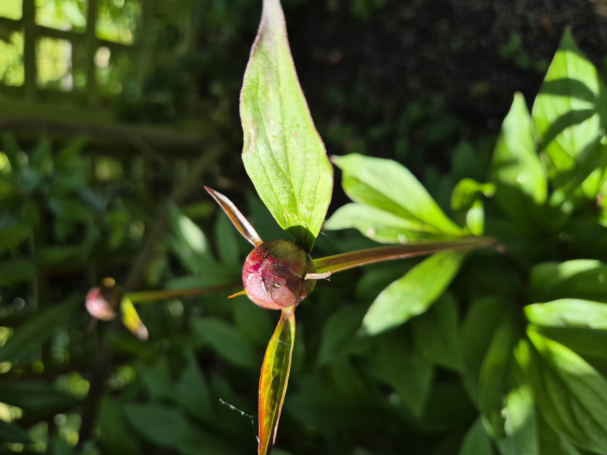
Overview
One of the most beloved and spectacular flowering perennials in the garden. Peonies produce enormous, lush blooms in shades of white, pink, and deep red, and are often powerfully fragrant. They are remarkably long-lived plants, capable of thriving in the same spot for decades.
Key Characteristics
- Blooms: Large, globe-shaped flowers appearing in late spring (May–June). The tight round buds open into full, sumptuous blooms.
- Foliage: Attractive, deeply divided dark-green foliage that provides structure throughout the season, often turning red in autumn.
- Ants: The sticky buds attract ants, which feed on the sweet nectar — this is completely harmless to the plant.
Pruning & Maintenance
- Deadheading: Remove spent blooms promptly to keep the plant tidy.
- Autumn cut-back: Once the foliage dies back in autumn, cut all stems to ground level and dispose of (do not compost) the old foliage to prevent botrytis.
- Planting depth: Ensure the crown is no more than 2–5cm below the soil surface — planting too deep is the most common reason peonies fail to flower.
Rhododendron (Rhododendron)
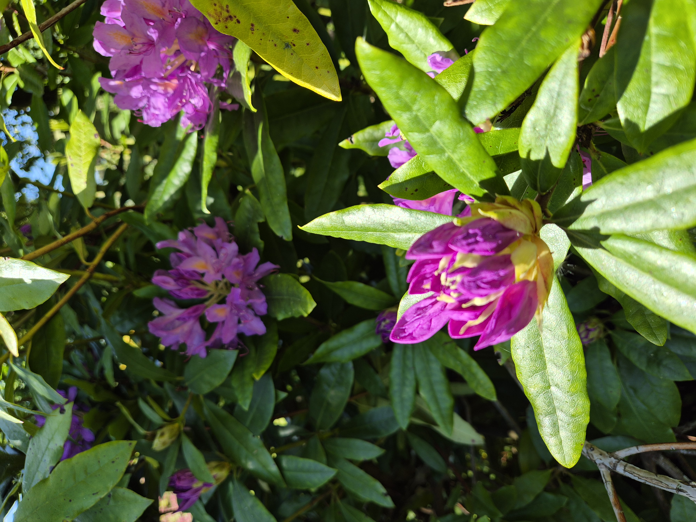
Overview
A magnificent acid-loving evergreen shrub producing large, spectacular trusses of trumpet-shaped flowers in shades of purple, mauve, pink, or white. Rhododendrons are a mainstay of woodland and sheltered gardens and can grow into impressive large shrubs over many years.
Key Characteristics
- Blooms: Large clusters (trusses) of funnel-shaped flowers typically in late spring (April–June).
- Foliage: Large, dark, leathery evergreen leaves that provide excellent structure year-round.
- Soil requirement: Critically requires acidic soil (pH 4.5–6.0). Will show yellowing leaves (chlorosis) in alkaline or chalky soils.
Pruning & Maintenance
- Deadheading: Remove spent flower trusses immediately after flowering by snapping them off carefully — this redirects energy into next year's buds rather than seed production.
- Pruning: Requires minimal pruning. Remove any dead, diseased, or crossing branches after flowering.
- Feeding: Apply an ericaceous (acid) fertiliser in spring to maintain health and vibrant flowering.
Aquilegia / Columbine (Aquilegia)
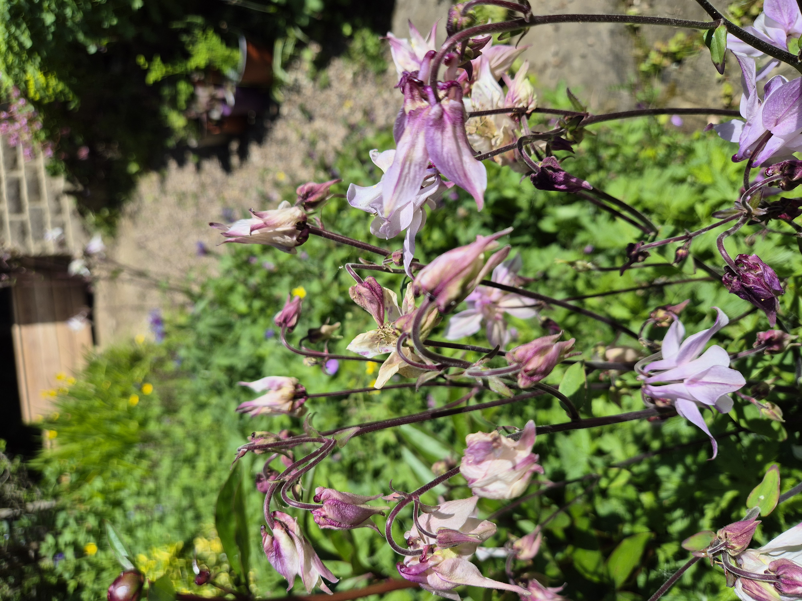
Overview
An enchanting cottage garden perennial beloved for its distinctive spurred flowers, which come in a wide range of colours — deep purple, burgundy, soft pink, white, and bi-coloured combinations. They self-seed prolifically and naturalise beautifully in mixed borders.
Key Characteristics
- Blooms: Nodding, spurred flowers borne on tall wiry stems in late spring to early summer (May–June). Each flower has an outer ring of sepals and inner petals with distinctive backward-pointing spurs.
- Foliage: Attractive, glaucous blue-green, lobed foliage providing good ground-level cover.
- Self-seeding: Crosses freely between varieties, producing new colour combinations each year.
Pruning & Maintenance
- Deadheading: Deadhead promptly to control self-seeding, or leave seed heads to ripen and distribute for more plants.
- Cut-back: Cut the whole plant back to near ground level after flowering to encourage a fresh flush of foliage and reduce leaf miner damage.
Welsh Poppy (Meconopsis cambrica)
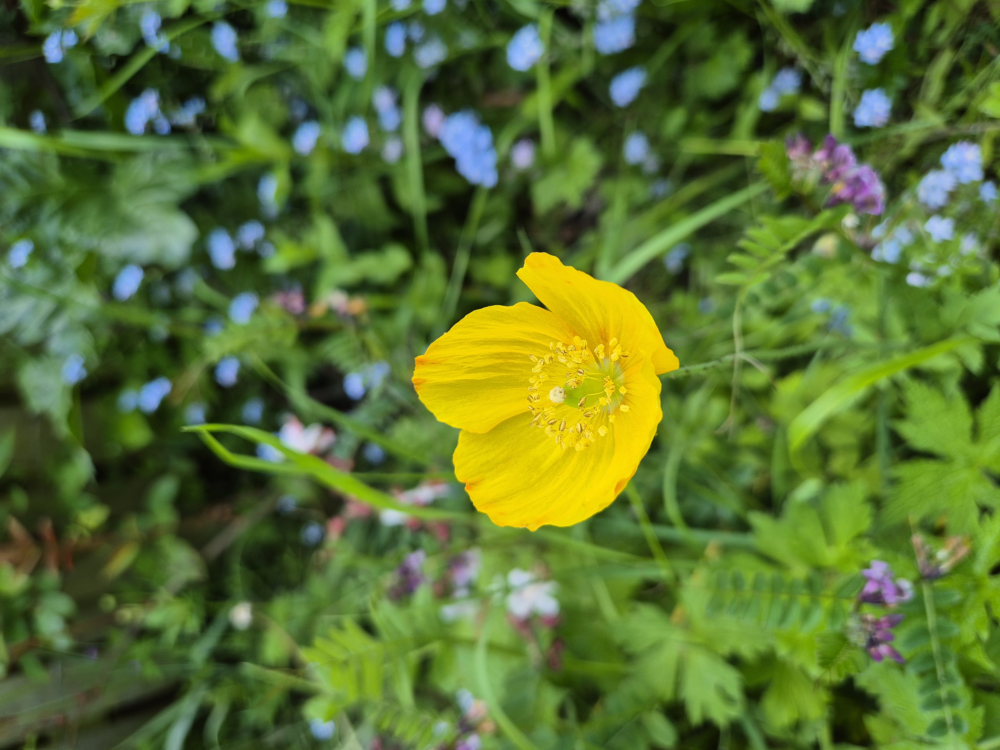
Overview
A cheerful, delicate perennial that naturalises freely in semi-shaded borders. The bright yellow (or occasionally orange) saucer-shaped flowers appear over a very long season, bringing sunshine-yellow colour from spring right through to autumn.
Key Characteristics
- Blooms: Bright, clear yellow four-petalled flowers on slender upright stems, from late spring through summer.
- Foliage: Soft, finely cut, pale-green foliage forming a low rosette at the base.
- Self-seeding: Will self-seed prolifically throughout the garden, appearing in cracks in paving, walls, and borders.
Pruning & Maintenance
- General care: Virtually no maintenance required. It thrives on neglect in a semi-shaded, moist spot.
- Caution: Once established, the deep taproot makes mature plants difficult to remove entirely. Weed out unwanted seedlings when small.
Hardy Geranium / Cranesbill (Geranium)
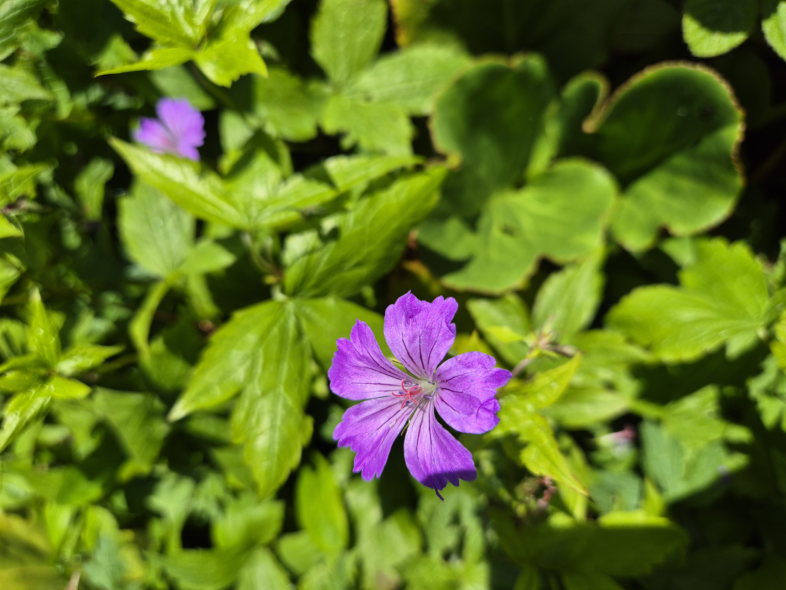
Overview
Not to be confused with the tender Pelargonium, the true Hardy Geranium is one of the most versatile and reliable perennials you can grow. It produces a long-lasting display of saucer-shaped flowers and smothers weeds with its spreading mounds of attractive, deeply cut foliage.
Key Characteristics
- Blooms: Five-petalled flowers in shades of violet-purple, magenta, pink, blue, and white, often with distinctive veining.
- Foliage: Deeply lobed, rounded leaves that often take on attractive autumnal colours before dying back.
- Habit: Spreads to form a useful, weed-suppressing ground cover.
Pruning & Maintenance
- Chelsea Chop: After the first main flush of flowers in early summer, cut the whole plant back hard to just above ground level. It will quickly re-grow and often produce a second flush of flowers in late summer.
- Division: Lift and divide congested clumps every three or four years in autumn or spring to keep them vigorous.
Euphorbia / Spurge (Euphorbia)
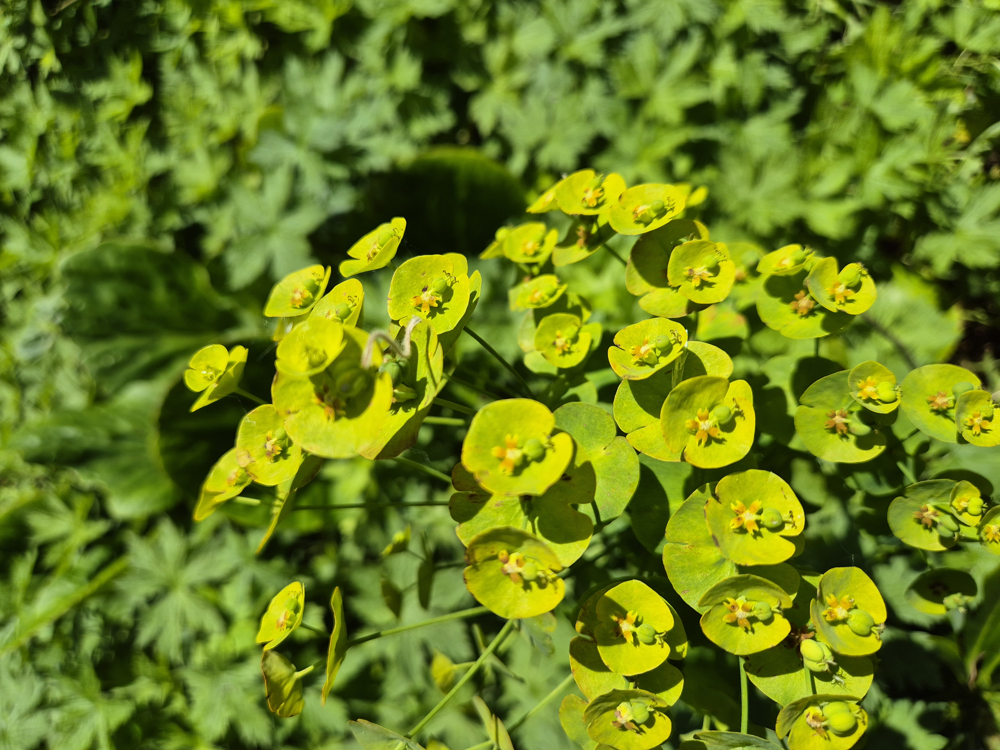
Overview
A highly architectural plant, Euphorbia produces stunning heads of bright acid lime-green bracts (modified leaves) that glow in the spring garden. It provides strong structural interest and contrasts brilliantly with purple and blue-flowering neighbours.
Key Characteristics
- Blooms: The colourful part is not the flower itself but the surrounding bracts, which are a vivid, luminous lime-yellow-green.
- Foliage: Glaucous (blue-green), narrow lance-shaped leaves arranged neatly around upright stems.
- Toxic sap: All parts of the plant contain a milky white latex sap that is a potent skin and eye irritant.
Pruning & Maintenance
- When to prune: After the bracts have faded (typically midsummer), cut the flowered stems back to the base to encourage new growth.
- Safety: Always wear gloves, long sleeves, and eye protection when cutting Euphorbias. Wash skin immediately if sap makes contact.
Forget-me-nots (Myosotis sylvatica)

Overview
A quintessential spring cottage garden plant, producing a carpet of tiny sky-blue flowers that perfectly complements tulips, wallflowers, and other spring bulbs. Forget-me-nots are biennials that self-seed so reliably they effectively behave as perennials.
Key Characteristics
- Blooms: Masses of tiny five-petalled sky-blue flowers with a tiny yellow centre, from April to June.
- Foliage: Soft, hairy, lance-shaped grey-green leaves forming a low rosette in the first year.
- Self-seeding: Self-seeds with exceptional reliability, ensuring plants appear each year without intervention.
Pruning & Maintenance
- After flowering: Once the flowers fade, pull the whole plant out by the roots. This tidies the border while still allowing seeds to scatter for next year.
- Powdery mildew: Plants often develop mildew late in the season — by this point they have already seeded, so simply remove and dispose of them.
Hosta (Hosta)
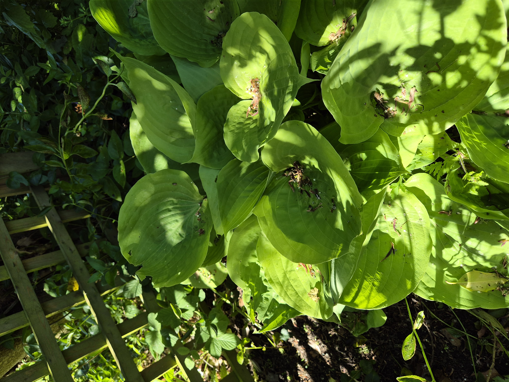
Overview
Prized primarily for their magnificent bold foliage, Hostas are the undisputed kings of the shady garden. They produce dramatic mounds of large, heavily textured leaves in an extraordinary range of colours, from deep blue-green to bright gold and variegated white.
Key Characteristics
- Foliage: Large, broadly oval to heart-shaped leaves, often with a heavily corrugated texture and a range of blue, green, or gold colouring.
- Blooms: Tall spikes of nodding, bell-shaped lilac or white flowers in midsummer.
- Slugs: Notoriously beloved by slugs and snails, which can quickly reduce the foliage to tatters.
Pruning & Maintenance
- Autumn cut-back: Once the foliage has been killed by the first autumn frost, cut it down to ground level and compost it.
- Slug control: Use organic slug pellets (ferric phosphate) or copper tape around pots. Emerging shoots in spring are the most vulnerable.
- Division: Lift and divide large clumps in spring as new growth starts.
Spiraea 'Gold Flame' (Spiraea japonica 'Gold Flame')
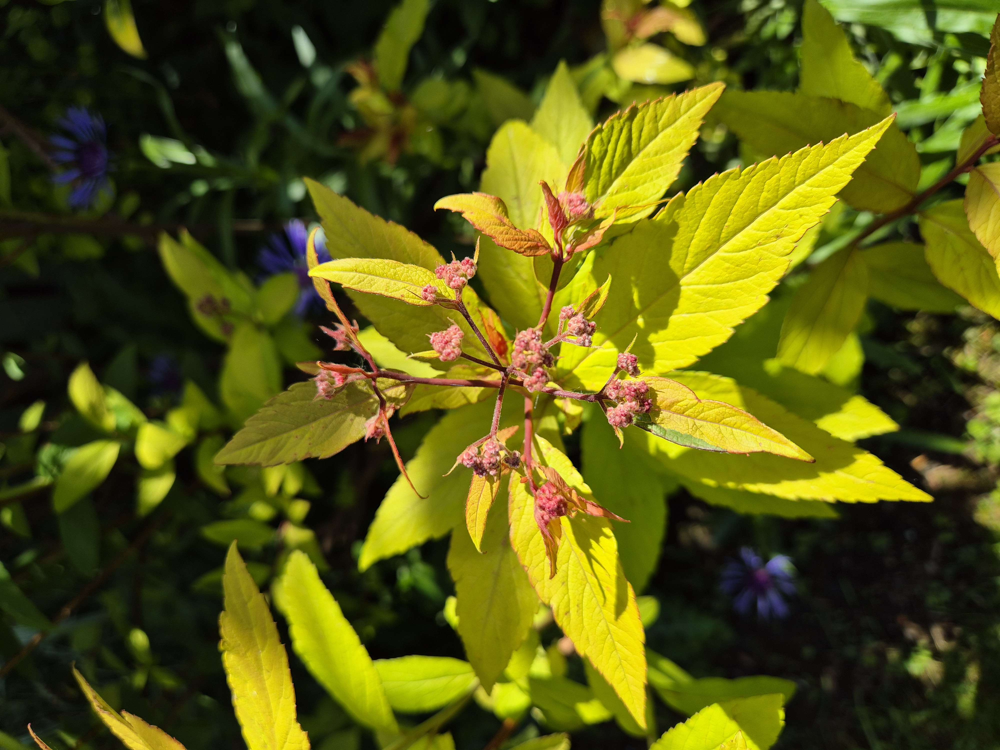
Overview
A spectacular compact deciduous shrub grown primarily for its stunning foliage display. The new spring growth emerges in vivid shades of copper-orange and red, maturing to bright gold-green through summer. It also produces small flat heads of deep pink flowers in midsummer.
Key Characteristics
- Spring foliage: New growth is an eye-catching bronze-copper-orange — one of the most striking spring colour effects in the shrub garden.
- Summer foliage: Matures to a bright golden lime-green.
- Blooms: Flat-topped clusters of tiny deep rosy-pink flowers from June to August.
Pruning & Maintenance
- When to prune: Prune hard in early spring (March), cutting all stems back to about 15–30cm from the ground. This maximises the spectacular new copper-bronze spring foliage.
- Note: This Spiraea blooms on new season's growth, so spring pruning does not remove flower buds.
Male Fern (Dryopteris filix-mas)

Overview
One of Britain's most common and robust native ferns, forming large, elegant shuttlecock-shaped clumps of arching bright-green fronds. An excellent, easy choice for shaded and semi-shaded spots, thriving under trees where little else will grow.
Key Characteristics
- Fronds: Large (up to 1m), lance-shaped, bipinnate fronds in a fresh bright green, arranged in a classic shuttlecock rosette.
- Habit: Semi-evergreen. Old fronds may look tatty by late winter but will be replaced by fresh new growth in spring.
- Wildlife: Provides valuable shelter for insects, frogs, and other small creatures.
Pruning & Maintenance
- Spring tidy: In early spring, remove old or dead fronds before the new ones unfurl. This is the only pruning needed.
- General care: Virtually no care required once established. Tolerates dry shade once settled in, though prefers moist, humus-rich soil.
Fig Tree (Ficus carica)

Overview
An exotic and dramatically handsome deciduous tree that brings a Mediterranean feel to the Yorkshire garden. The large, deeply lobed sculptural leaves are instantly recognisable and add architectural interest from spring to autumn. In warm summers it may produce edible figs.
Key Characteristics
- Foliage: Very large (up to 30cm), deeply three-to-five-lobed leaves with a rough texture on top and hairy underside, on a striking sculptural branch framework.
- Fruit: Small green fruits develop in summer; in a warm Yorkshire season some may ripen to a bluish-purple by late August or September.
- Root restriction: Restricting the roots (growing in a large pot or a 'fig pit' lined with paving slabs) encourages fruiting over excessive leaf growth.
Pruning & Maintenance
- When to prune: Prune in late spring (May) once risk of hard frost has passed, as fresh cuts are vulnerable to frost damage.
- How to prune: Remove dead, damaged, or inward-growing branches. Shorten long shoots to maintain shape and encourage bushy growth.
- Winter protection: Young trees benefit from wrapping the framework in horticultural fleece during hard Yorkshire winters.
Catmint (Nepeta x faassenii)

Overview
A wonderfully aromatic, easy-going perennial producing long cascading spires of small lavender-blue flowers, adored by bees, butterflies, and — true to its name — cats. It forms a soft, billowing mound of grey-green foliage and is invaluable for edging paths and borders.
Key Characteristics
- Blooms: Slender spikes of small, two-lipped lavender-blue flowers from June, often continuing into autumn if cut back after the first flush.
- Foliage: Small, soft, grey-green, aromatic leaves with a pleasantly herbal scent when brushed.
- Wildlife: Highly attractive to bees and butterflies. Cats are famously drawn to it and may roll on or chew the plant.
Pruning & Maintenance
- Second flush: Cut the whole plant back by about half immediately after the first main flush (usually late June or July). A generous second flush of flowers will follow within a few weeks.
- Autumn: Leave old stems over winter to provide insect shelter and protect the crown from frost. Cut back to near ground level in early spring.
Sweet Rocket (Hesperis matronalis)
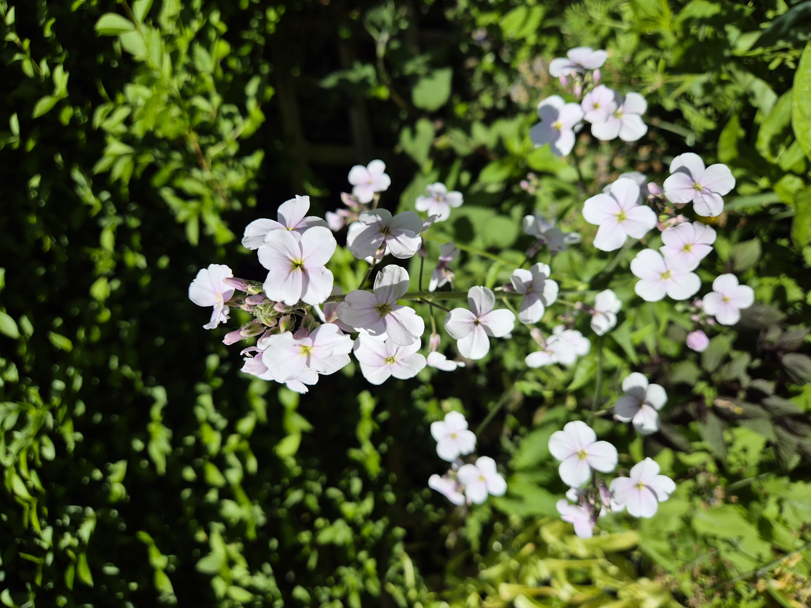
Overview
A classic English cottage garden favourite, also known as Dame's Rocket or Dame's Violet. It produces elegant spires of fragrant four-petalled flowers in white or shades of lavender. Most strongly scented in the evening — plant it near a window or seating area to enjoy the fragrance.
Key Characteristics
- Blooms: Four-petalled cross-shaped flowers (a hallmark of the Brassica family) in white, pale lilac, or purple, on tall stems in late spring to early summer (May–June).
- Fragrance: Highly and sweetly fragrant, particularly in the evening.
- Habit: A biennial or short-lived perennial that self-seeds reliably to perpetuate itself.
Pruning & Maintenance
- After flowering: Allow some seed heads to develop and scatter before removing the plant, to ensure self-seeding for the following year.
- General care: Very low maintenance. Simply weed out seedlings that appear in unwanted locations.
English Bluebell (Hyacinthoides non-scripta)
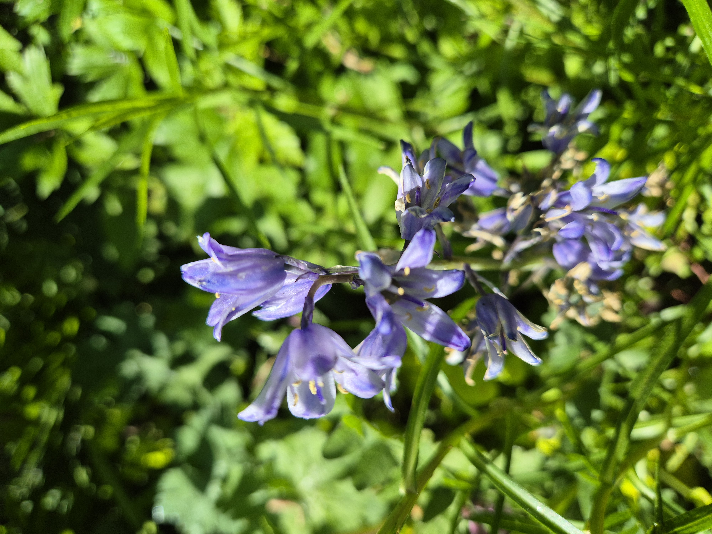
Overview
The iconic native English bluebell is one of Britain's most celebrated wildflowers, producing drooping spikes of sweetly scented, nodding, deep violet-blue bell-shaped flowers. Finding them naturalised in the garden under trees is a sign of a mature, ecologically rich space.
Key Characteristics
- Blooms: Pendulous spikes of deep blue-violet, bell-shaped flowers with recurved tips. The flower spike characteristically droops to one side. Flowers from April to May.
- Scent: Sweetly and distinctively fragrant.
- Identification: Distinguished from the Spanish Bluebell by its drooping stem, more intensely blue tubular flowers, and cream (not blue) pollen.
Pruning & Maintenance
- After flowering: Allow the leaves to die back completely and naturally — do not cut them off. The bulb needs this time to photosynthesise and store energy for next year.
- Do not disturb: Avoid digging in bluebell areas until the foliage has completely died back (around July).
- Spreading: They will naturalise and spread freely by bulb offsets and seed, increasing the patch year by year.
Ajuga / Bugle (Ajuga reptans)
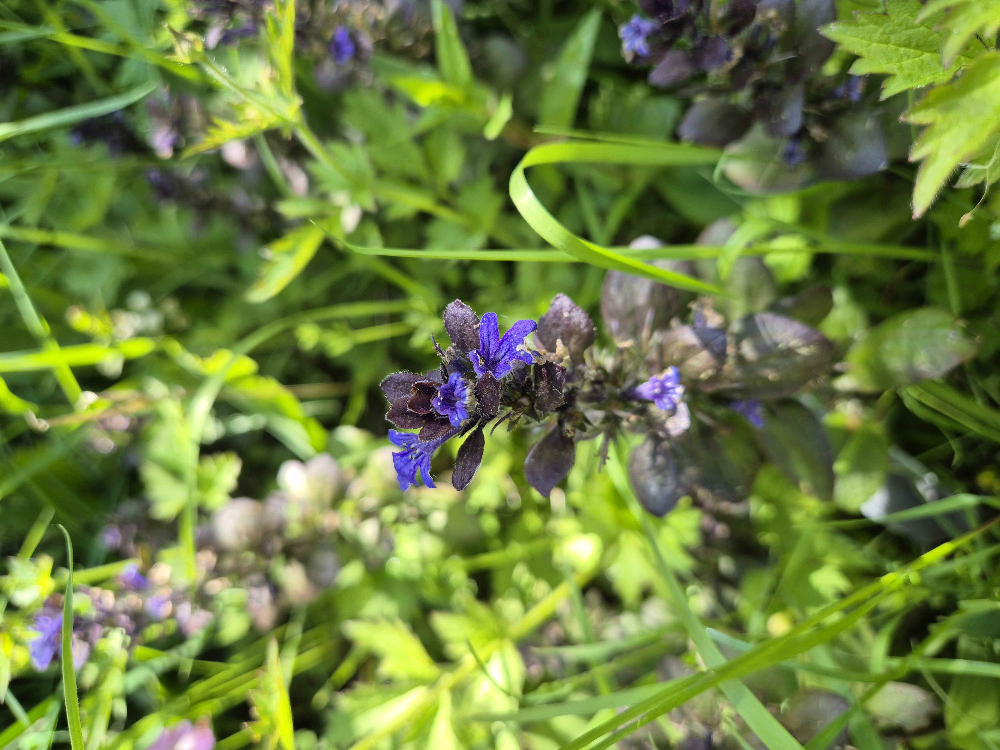
Overview
An invaluable, low-growing, carpet-forming evergreen perennial that thrives in shade, making it an excellent ground cover under trees and shrubs. In spring it produces striking short spikes of vivid blue flowers. Many cultivars have highly ornamental dark bronze or burgundy foliage for year-round interest.
Key Characteristics
- Blooms: Short, upright spikes of vivid blue-violet two-lipped flowers in April–May.
- Foliage: Low rosettes of dark, bronze-purple glossy leaves spreading by runners (stolons) to form a dense, weed-suppressing mat.
- Wildlife: Early spring flowers are an important nectar source for bumblebees emerging from hibernation.
Pruning & Maintenance
- Spreading: It spreads via surface runners (stolons). Simply pull up rooted runners to contain the spread, or transplant them to fill new areas.
- Division: Divide congested mats every three or four years in autumn or spring to reinvigorate the patch.
Lady's Mantle (Alchemilla mollis)

Overview
A true classic of the cottage garden, Lady's Mantle is beloved for its enchanting velvety, fan-shaped leaves that collect water droplets into perfectly spherical pearls after rain. It produces frothy sprays of tiny chartreuse-yellow flowers from late spring through to midsummer and is one of the most useful edging plants in the border.
Key Characteristics
- Foliage: Rounded, pleated leaves covered in fine hairs that repel water beautifully, causing droplets to sit on the surface like tiny mercury balls — a magical sight after rain.
- Blooms: Billowing sprays of tiny lime-yellow-green flowers from May to July, excellent for cutting and drying.
- Uses: An outstanding edging plant, ground cover, and gap-filler. It softens hard edges beautifully.
Pruning & Maintenance
- Cut back after flowering: Once the flowers have faded (typically July), cut the whole plant back hard to near ground level. It will re-grow quickly with fresh, clean foliage that looks good until the first frosts.
- Self-seeding: Cut back before seeds ripen to prevent unwanted seedlings appearing everywhere.
Comfrey (Symphytum officinale)

Overview
A vigorous, large-leafed perennial herb and one of the most valuable plants for organic gardening. Comfrey has deep tap roots that draw up nutrients from far below the surface, and its leaves make a potent, potassium-rich liquid fertiliser for the garden — sometimes called "liquid gold".
Key Characteristics
- Foliage: Very large (up to 60cm), rough, hairy, lance-shaped leaves that are strongly textured and a bold mid-green.
- Blooms: Drooping clusters of tubular bell-shaped flowers in blue, purple, or white in late spring and early summer.
- Wildlife: The tubular flowers are a favourite of long-tongued bumblebees.
Pruning & Maintenance
- Cutting back: Can be cut back to the ground three or four times per season — the plant will quickly re-grow. The cut leaves can be steeped in water for four weeks to create a highly effective liquid fertiliser.
- Caution: Once established, comfrey is very difficult to remove as even small fragments of the deep tap root will re-grow. Choose its position carefully.
- Comfrey tea: Fill a container with cut leaves, cover with water, and leave for 4–6 weeks. Dilute the resulting dark liquid 15:1 with water for an excellent high-potash feed.
Holly (Ilex aquifolium)

Overview
A magnificent native British evergreen tree, one of the most important trees for wildlife in the garden and one of the most structurally dramatic plants year-round. Its glossy, spiny leaves, bright red winter berries (on female trees), and deeply furrowed mature bark make it a garden asset across all four seasons.
Key Characteristics
- Foliage: Deep glossy green, stiff, oval leaves with sharp undulating spiny margins — though upper branches often produce spineless leaves.
- Berries: Bright red berries on female trees, ripening in autumn and persisting through winter, providing a vital food source for thrushes, blackbirds, and fieldfares.
- Wildlife: Provides dense nesting habitat, winter food, and is the sole food plant of the Holly Blue butterfly caterpillar.
Pruning & Maintenance
- When to prune: Late summer (August) — avoids disturbing nesting birds and gives the plant time to harden off before winter.
- How to prune: Hollies tolerate heavy pruning and can be cut back hard to renovate overgrown specimens. They can also be clipped to formal shapes or grown as hedges.
- Gloves essential: Always wear thick gloves — the leaf spines are needle-sharp.
Ninebark (Physocarpus opulifolius)

Overview
An increasingly popular deciduous shrub grown primarily for its spectacular foliage — particularly in the coloured-leaved cultivars which produce dramatic bronze or copper new growth. It also offers small clusters of white flowers in early summer and attractive peeling bark on older stems that give it its common name, Ninebark.
Key Characteristics
- Foliage: Three-lobed, maple-like leaves that emerge in vivid shades of bronze or copper-red before maturing to darker tones.
- Blooms: Small clusters of white or pale pink flowers in May–June, attractive to insects.
- Bark: On mature stems, the bark peels in strips, revealing multiple layers (hence the name Ninebark).
Pruning & Maintenance
- When to prune: Immediately after flowering (June–July). Avoid pruning in winter or early spring to prevent removing flower buds.
- How to prune: Can be pruned quite hard to maintain size and keep the colourful new growth coming. Remove one in three of the oldest stems to the base each year for ongoing renewal.
Clematis (Clematis)

Overview
The "Queen of Climbers", Clematis is a diverse genus of climbing perennials encompassing plants that flower in almost every colour and season. They scramble and climb by twisting their leaf stalks around supports, making them perfect for training over fences, walls, pergolas, and into shrubs and trees.
Key Characteristics
- Climbing mechanism: Climbs by twisting the petioles (leaf stalks) around supports — it cannot self-cling like Ivy, so needs wires, trellis, or other plants to scramble through.
- Flowers: Depending on the type, flowers range from large open blooms in summer to small nodding bells or starry flowers.
Pruning & Maintenance
- Pruning groups: Clematis are divided into three pruning groups:
- Group 1 (early-flowering, e.g. C. montana): Prune immediately after flowering in spring if needed.
- Group 2 (large early summer flowers, e.g. 'Nelly Moser'): Light prune in February, tidy again after the first flush.
- Group 3 (late summer, e.g. C. viticella): Prune hard to 30cm in late winter/early spring.
- Clematis wilt: If a stem collapses suddenly, cut it back to healthy growth at the base — the plant typically recovers from the rootstock.